github.com/runjak/functional-programming-primer
github.com/runjak/functional-programming-primer
Overview:
- A few words on Lisp
- Freedom from state
- Functions in math
- FP patterns
- Typechecking
- Outro
A few words on Lisp
- Invented 1958 by John McCarthy
- LISt Processor
- S-Expressions: Atoms and Lists
JavaScript 👀
function abs(x) {
if (x >= 0) {
return x;
}
return -x;
}Look, an AST 🌳
Lisp S-Expressions
(defun abs (x)
(if
((>= x 0) x)
(true -x)
)
)🕵️ Whats happening here?
- A language where everything consists of $x.
- In this case $x means lists.
- → composition
- → selfmodification
- Paul Graham: roots of lisp
Freedom from state
- State is troublesome
- We need state
- → State must be managed and isolated
OOP and State
- The class as a blueprint for portions of state
- Clusters functionality
- Clusters state
- Singletons
- State begets more state
⏳ aaaa ♻️!
FP and State
- Look, a pure function:
function score(t: Thing): ScoredThing {…} -
Let's decorate awareness of previous scores:
function score(score: Score, t: Thing): [ScoredThing, Score] {…} -
We can decorate state and hide it away:
const statefulScore = (s: Score) => (t: Thing) => [ScoredThing, Score];
Functions in math
- Projections from one set onto another
- Algorithms 🚀
- Deterministic (same y for same x)
- Declarative (what not why)
Pure code
What is purity? 🙌
- Deterministic code
- Data is immutable
- → no side effects
Pure code
What do we get from it?
- Referential transparency
- Reduction of logical complexity
- Reduction of concurrent complexity
- Composition
- Simlified testing
- Simplified debugging
Patterns
- Pattern exist in relation to a level of abstraction
- Loops in assembly
- OOP: classes and stuff
Clustering purity
- Functional code 💞 purity
- But purity can't even 🔥 a CPU
- → tie it together at an impure boundry
Immutabillity (1/2)
- If you say 'const x = 5;' don't be a liar.
- Don't change 👵 - make new ✨.
-
Do not communicate by sharing memory; instead, share memory by communicating.
- blog.golang.org (2010-07-13) -
const vec3d = { ...vec2d, z : 0 };
Immutabillity (2/2)
- JS interpreter can optimize for shapes
- Memory management - avoids leaks, simplifies GC
- Concurrency: avoid worries with mutices, races, …
- Functional data structures ( zippers, ( finger-)trees)
List Processing
- Spoilered by Lisp
- Avoid indices and off-by-one nonsense
- Embrace map, reduce, …
- Be bold and mix functions and lists
- Generalizes to other structures ( functor)
Higher order functions
- sortBy, compareOn, createSelector, initializeTracking
- Functions as first class citizens
Composition
- Compose complex structures/code from simple functions (dynamically)
- Reuse primitives
-
Associativity simplifies refactoring
xs.map(f).map(g) // xs.map(x => g(f(x)))x => f(g(h(x))) // const i = (x) => g(h(x)); x => f(i(x))
Currying
Props an Haskell Curry, Moses Schönfinkel
- Known to math since 1893
- Available in code since about 1967
- Partial application of functions
const add = x => y => x + y;
[1,2,3].map(add(5)); // [6,7,8]
Typechecking
Types and Sets
- Each value is it's own type
- Types can be clustered into other types
- Hindley-Milner (1969)
- Curry-Howard-Correspondence (1934, 1958, 1969)
Type union
-
type FooBar = 'foo' | 'bar'; -
type Thing = string | number; -
type MaybeString = ?string; - Also known as sum type
Tuples
-
type Vector2D = [number, number]; - Also known as product type
- Bonus level: named tuples:
type Vector2D = { x: number, y: number, };
Type intersection
- Type extension:
type Vector3D = { z: number, } & Vector2D; - Constraint tracking:
type Foo = FooBar & 'foo';
Type refinements
Extending the concept of type intersection
function foo(x: ?number) {
if (x !== null && x !== undefined) {
// x: number
}
}Outro
Things I found helpful
- Cluster code with modules
- Think in terms of dataflow - not by clustering states
- Explore transformations of code
- Give it a try if you haven't! It broadened my perspective.
Further reading
- slideshare.net/TjerkW/the-rise-of-functional-programming
- github.com/seanhess/functional-javascript
- en.wikipedia.org/wiki/Functional_programming
- drboolean.gitbooks.io/mostly-adequate-guide
- lihaoyi.com/post/WhatsFunctionalProgrammingAllAbout.html
- learnyouahaskell.com/chapters
- book.realworldhaskell.org/read